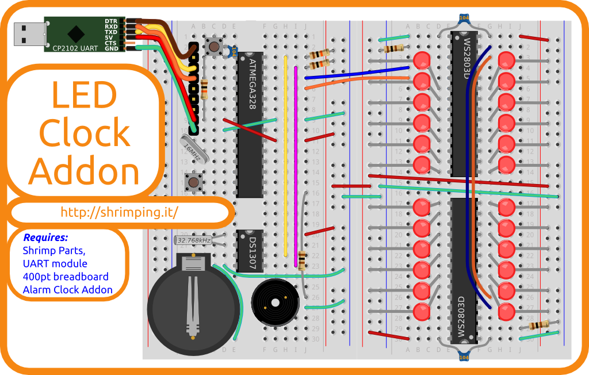
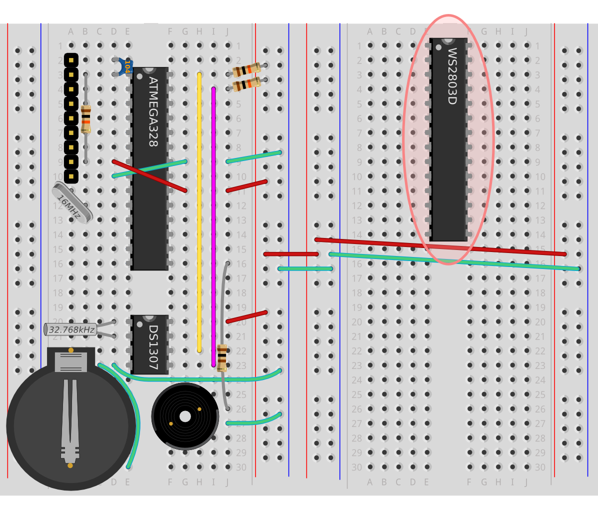
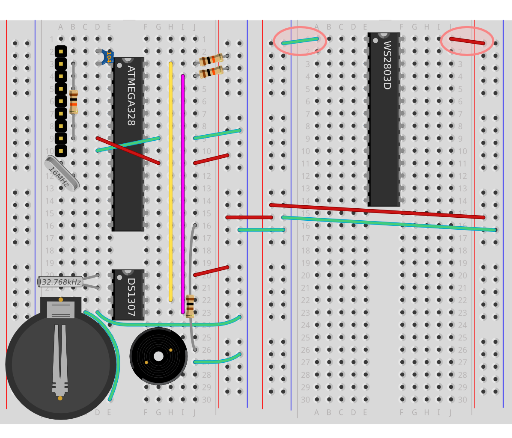
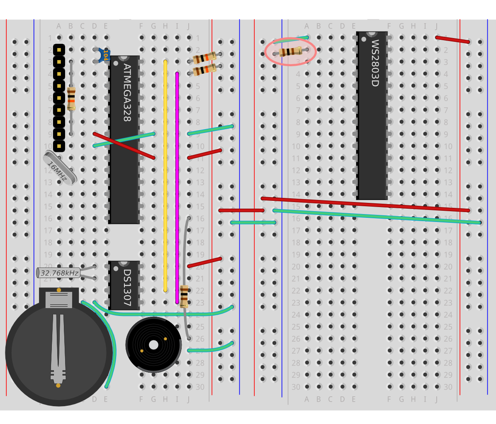
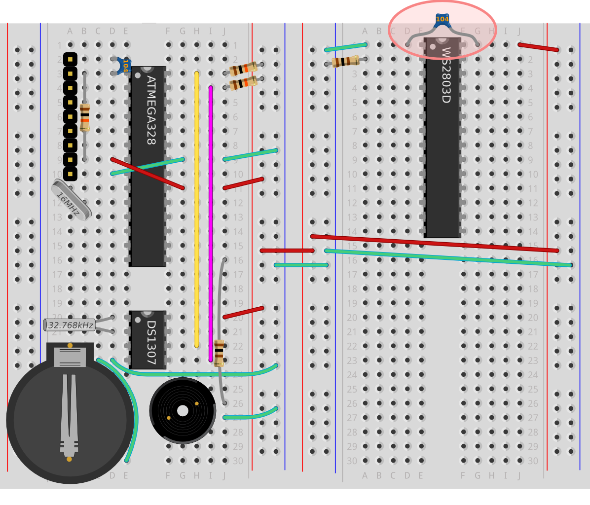
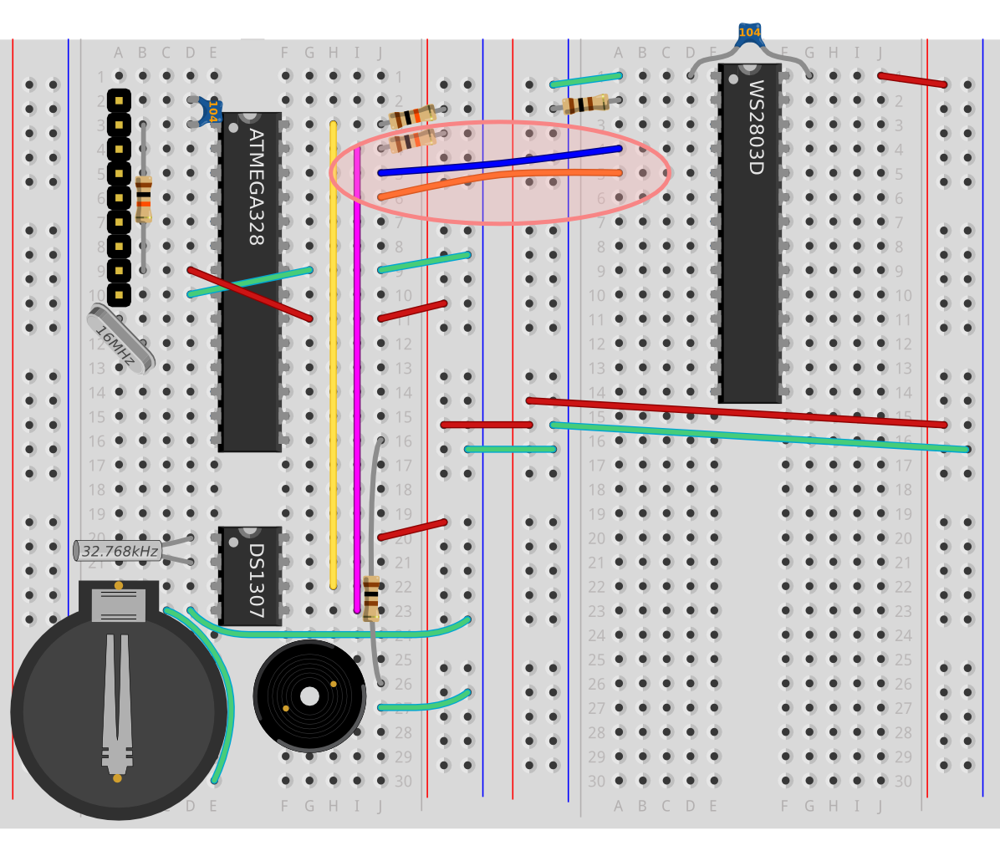
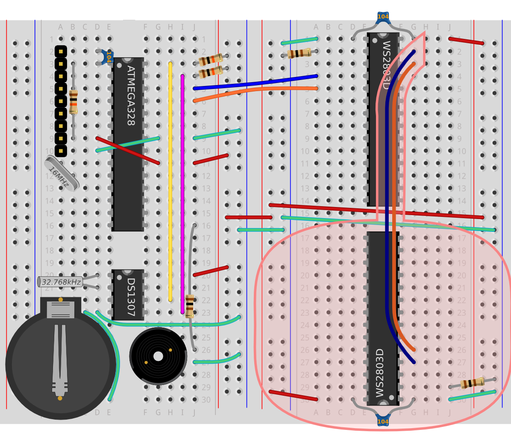
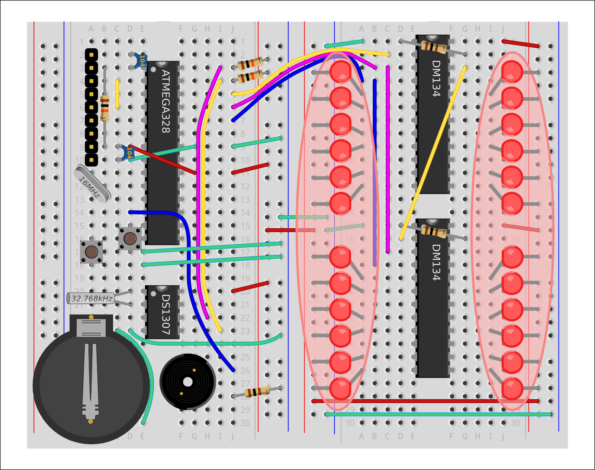
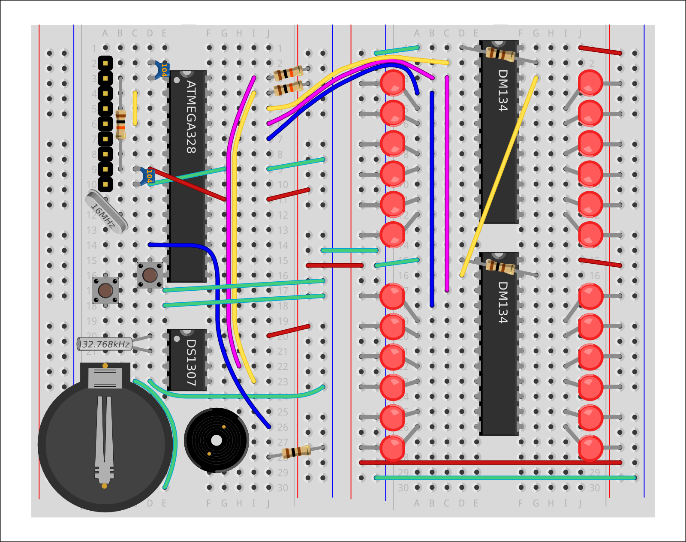
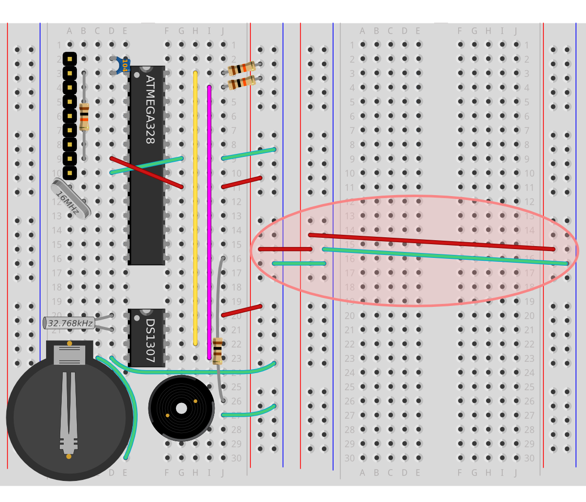

This guide provides details for learners to wire, program and configure a @ShrimpingIt digital clock project with ultrabright LEDs which can programmed as a Word Clock or a Unary Clock. For general orientation, see the Alarm Clock project page. |  |
The build assumes you have the following kits...
For convenience, pre-bagged kits are available to order from @ShrimpingIt online. If you do not wish to buy from us, information is provided for you to source commodity parts direct from electronics wholesalers. In addition you will need a Linux, Mac or Windows computer running the latest Arduino IDE. Mac and Windows computers need a CP2102 driver to be installed for the USB Programmer to be recognised. |
Before embarking on the LED Clock, you should have successfully completed the Alarm Clock build. This guide uses the Alarm Clock circuit configuration as its starting point. As before we'll be using 'battleship' numbering to indicate where components should be inserted, with numbers and letters indicating the rows and columns of the breadboard. Step 1: Adding an extra breadboardThe 24 LEDs in the display will be laid out, with special chips to drive them, on an extra breadboard, which we will refer to as the LED Display breadboard. Later, this will be attached to the (previously constructed) Alarm Clock breadboard with just four wires, two for power (+5V and 0V) and two for receiving LED control data (Clock and Data). The breadboards can be oriented in various ways, as long as the four wires are attached. For example, the breadboards could be attached back-to-back to fit compactly inside a housing when the build is complete. However, to make the build simple, we will first attach the new breadboard to the right of the previous Alarm Clock breadboard, using the in-built docking mechanism.
Step 2: Connect the power rails of the new breadboardBoth power rails of the second breadboard will be heavily used, powering up the LED driver chips, and supplying each of the 24 LEDs. We therefore need to connect red and green wires across from the power rail of the Alarm Clock breadboard, and in turn wire the left and right power rails of the second breadboard together.
Step 3: Attach the first WS2803D LED Driver chip The WS2803D LED driver chip will be used to switch on and off the LEDs we're about to attach. Each chip is actually capable of controlling up to 18 LEDs, but we're only using 12 on each, for a total of 24 lights. The WS2803D chip will need a power connection, and wires to receive LED lighting commands from the Shrimp's microcontroller. Just like the ATMEGA328P-PU and the DS1307, the WS2803D chip has a half-moon stamped at one end. Pins are numbered anticlockwise, starting from the half-moon. The first driver chip should be placed in the same orientation as all the other chips, straddling the right-hand LED Display breadboard and positioned as far up as it can go, leaving just enough room for the power rail connections which should be running across the centre of the board.
Step 4: Attach power to the WS2803D Pin 1 needs a connection to ground and Pin 28 (all the way anticlockwise from the half-moon) needs a connection to the 5V supply.
Step 5: Attach a resistor as a current reference You may recall from the Blink build that attaching LEDs directly to 5V can make them burn out, so a current-limiting resistor was added between the LED and ground when attaching the Blink LED, to limit the flow of electricity. A WS2803D is known as a 'constant current' LED driver, and you can explicitly limit the current which flows through the LED pins. We simply have to attach a single current-limiting resistor to pin 2, to tell the WS2803D what the maximum current should be. This saves us attaching current-limiting resistors to every one of the 24 LEDs. The correct resistor value can be calculated according to the following formula; The resistance (in Ohms) is 27.5 divided by the desired current (in Amps). Our LEDs can handle a maximum of 20milliAmps which is the same as 0.020 Amps. The resistor should therefore be 27.5 / 0.020, which is 1375 Ohms or 1.375 kOhms. Unfortunately resistors are only available in a limited number of values, so we'll err on the side of caution and use a 1.5 kOhm resistor, limiting the current to 18.3 milliAmps instead.
Step 6: Add a decoupling capacitor We'll add a small capacitor between the power lines of the WS2803D to smooth the supply in case the circuit experiences sudden power demands which cause the voltage to drop (e.g. turning on all the ultrabright LEDs at once!). We'll be using a capacitor marked 104, which indicates its capacitance in picoFarads. Because the last figure indicates the number of zeroes to add on the end, this means it's a 10(0000) picoFarad capacitor. Because there are 1000 picoFarads in a nanoFarad, it's also called a 100 nanoFarad capacitor.
Step 7: Add the wires for receiving LED control instructions The WS2803D can accept instructions to turn on and off specific LEDs over two wires. If the data wire is at 5V then a one is being sent. If the data wire is at 0V then a zero is being sent. The clock wire is pulsed to 5V when a new value on the data wire is ready to be read. Using this clocked serial data stream, a series of ones and zeroes is read into the WS2803, which determins whether individual LEDs are on or off. Once you have attached the clock and data lines the first WS2803D chip is fully wired up.
Step 8: Now wire the second WS2803D chip The second chip needs exactly the same connections, but it's upside down relative to the rest of the chips on the breadboard. So the half-moon shape is at the very bottom of the board, so Pin 1 (which is anticlockwise from the half-moon shape) should be inserted at the bottom row 30. The second chip accepts data not from the ATMEGA chip directly, but from the other WS2803D. When the ATMEGA sends more than 18 ones and zeroes, the extra information is passed on from the first WS2803D to the next one. Special pins on each WS2803D are available to pass on this overflowing data. WS2803D chips can therefore be chained, and they provide special serial and clock pins for the next chip in the chain.
Step 9: Add all the LEDs There are a total of 24 LEDs to insert. Each one has one slightly longer leg - the positive leg, into which electrical charge flows to light it up. LED stands for "Light Emitting Diode". A diode is equivalent to a valve - it only allows charge to flow one way. If you attach your LEDs the wrong way round, they will not light up. The long legs need to be attached to the +ive power rails down the sides of the LED display breadboard, and the short legs should be inserted either side of the WS2803D chips in breadboard rows 6,7,9,11,13,14 and 17,18,20,22,24,25. The WS2803D will allow current to flow into the pins in these rows, or block current flow, depending on the instructions it receives from the Shrimp's microcontroller. Follow the pattern of LED wire locations in the diagram. These locations have been selected to allow enough space for the 5mm LEDs to lie next to each other. Finished! |  |
{kind=link}